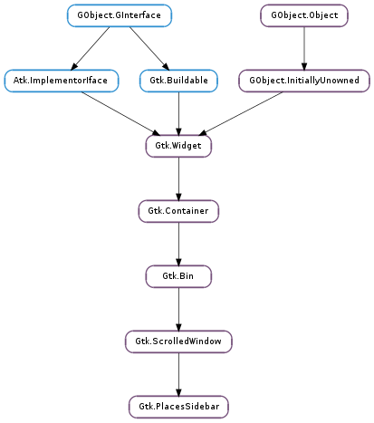

| static | new() |
| add_shortcut(location) | |
| get_location() | |
| get_nth_bookmark(n) | |
| get_open_flags() | |
| get_show_connect_to_server() | |
| get_show_desktop() | |
| list_shortcuts() | |
| remove_shortcut(location) | |
| set_location(location) | |
| set_open_flags(flags) | |
| set_show_connect_to_server(show_connect_to_server) | |
| set_show_desktop(show_desktop) |
| Name | Type | Flags | Description |
|---|---|---|---|
| location | Gio.File | r/w | The location to highlight in the sidebar |
| open-flags | Gtk.PlacesOpenFlags | r/w | Modes in which the calling application can open locations selected in the sidebar |
| show-connect-to-server | bool | r/w | Whether the sidebar includes a builtin shortcut to a ‘Connect to server’ dialog |
| show-desktop | bool | r/w | Whether the sidebar includes a builtin shortcut to the Desktop folder |
| Name | Parameters | Return | Description |
|---|---|---|---|
| drag-action-ask | int | int | The places sidebar emits this signal when it needs to ask the application to pop up a menu to ask the user for which drag action to perform. |
| drag-action-requested | Gdk.DragContext, GObject.Object, int | int | When the user starts a drag-and-drop operation and the sidebar needs to ask the application for which drag action to perform, then the sidebar will emit this signal. The application can evaluate the context for customary actions, or it can check the type of the files indicated by source_file_list against the possible actions for the destination dest_file. The drag action to use must be the return value of the signal handler. |
| drag-perform-drop | GObject.Object, int, int | The places sidebar emits this signal when the user completes a drag-and-drop operation and one of the sidebar’s items is the destination. This item is in the dest_file, and the source_file_list has the list of files that are dropped into it and which should be copied/moved/etc. based on the specified action. | |
| open-location | GObject.Object, Gtk.PlacesOpenFlags | The places sidebar emits this signal when the user selects a location in it. The calling application should display the contents of that location; for example, a file manager should show a list of files in the specified location. | |
| populate-popup | GObject.Object, GObject.Object, GObject.Object | The places sidebar emits this signal when the user invokes a contextual menu on one of its items. In the signal handler, the application may add extra items to the menu as appropriate. For example, a file manager may want to add a “Properties” command to the menu. It is not necessary to store the selected_item for each menu item; during their Gtk.MenuItem ::activate callbacks, the application can use Gtk.PlacesSidebar.get_location () to get the file to which the item refers. The selected_item argument may be None in case the selection refers to a volume. In this case, selected_volume will be non-NULL. In this case, the calling application will have to GObject.Object.ref () the selected_volume and keep it around for the purposes of its menu item’s “activate” callback. The menu and all its menu items are destroyed after the user dismisses the menu. The menu is re-created (and thus, this signal is emitted) every time the user activates the contextual menu. | |
| show-connect-to-server | The places sidebar emits this signal when it needs the calling application to present an way to connect directly to a network server. For example, the application may bring up a dialog box asking for a URL like “sftp://ftp.example.com”. It is up to the application to create the corresponding mount by using, for example, Gio.File.mount_enclosing_volume (). | ||
| show-error-message | str, str | The places sidebar emits this signal when it needs the calling application to present an error message. Most of these messages refer to mounting or unmounting media, for example, when a drive cannot be started for some reason. |
Bases: Gtk.ScrolledWindow
Gtk.PlacesSidebar is a widget that displays a list of frequently-used places in the file system: the user’s home directory, the user’s bookmarks, and volumes and drives. This widget is used as a sidebar in Gtk.FileChooser and may be used by file managers and similar programs.
The places sidebar displays drives and volumes, and will automatically mount or unmount them when the user selects them.
Applications can hook to various signals in the places sidebar to customize its behavior. For example, they can add extra commands to the context menu of the sidebar.
While bookmarks are completely in control of the user, the places sidebar also allows individual applications to provide extra shortcut folders that are unique to each application. For example, a Paint program may want to add a shortcut for a Clipart folder. You can do this with Gtk.PlacesSidebar.add_shortcut ().
To make use of the places sidebar, an application at least needs to connect to the Gtk.PlacesSidebar ::open-location signal. This is emitted when the user selects in the sidebar a location to open. The application should also call Gtk.PlacesSidebar.set_location () when it changes the currently-viewed location.
| Returns: | a newly created Gtk.PlacesSidebar |
|---|---|
| Return type: | Gtk.Widget |
Creates a new Gtk.PlacesSidebar widget.
The application should connect to at least the Gtk.PlacesSidebar ::open-location signal to be notified when the user makes a selection in the sidebar.
| Parameters: | location (Gio.File) – location to add as an application-specific shortcut |
|---|
Applications may want to present some folders in the places sidebar if they could be immediately useful to users. For example, a drawing program could add a “/usr/share/clipart” location when the sidebar is being used in an “Insert Clipart” dialog box.
This function adds the specified location to a special place for immutable shortcuts. The shortcuts are application-specific; they are not shared across applications, and they are not persistent. If this function is called multiple times with different locations, then they are added to the sidebar’s list in the same order as the function is called.
| Returns: | a Gio.File with the selected location, or None if nothing is visually selected. |
|---|---|
| Return type: | Gio.File |
Gets the currently-selected location in the sidebar. This can be None when nothing is selected, for example, when Gtk.PlacesSidebar.set_location () has been called with a location that is not among the sidebar’s list of places to show.
You can use this function to get the selection in the sidebar. Also, if you connect to the Gtk.PlacesSidebar ::popup-menu signal, you can use this function to get the location that is being referred to during the callbacks for your menu items.
| Parameters: | n (int) – index of the bookmark to query |
|---|---|
| Returns: | The bookmark specified by the index n, or None if no such index exist. Note that the indices start at 0, even though the file chooser starts them with the keyboard shortcut “Alt-1”. |
| Return type: | Gio.File |
This function queries the bookmarks added by the user to the places sidebar, and returns one of them. This function is used by Gtk.FileChooser to implement the “Alt-1”, “Alt-2”, etc. shortcuts, which activate the cooresponding bookmark.
| Returns: | the Gtk.PlacesOpenFlags of sidebar |
|---|---|
| Return type: | Gtk.PlacesOpenFlags |
Gets the open flags.
| Returns: | True if the sidebar will display a “Connect to Server” item. |
|---|---|
| Return type: | bool |
Returns the value previously set with Gtk.PlacesSidebar.set_show_connect_to_server ()
| Returns: | True if the sidebar will display a builtin shortcut to the desktop folder. |
|---|---|
| Return type: | bool |
Returns the value previously set with Gtk.PlacesSidebar.set_show_desktop ()
| Returns: | A GLib.SList of Gio.File of the locations that have been added as application-specific shortcuts with Gtk.PlacesSidebar.add_shortcut (). To free this list, you can use g_slist_free_full (list, (GDestroyNotify) g_object_unref); |
|---|---|
| Return type: | [Gio.File] |
Gets the list of shortcuts.
| Parameters: | location (Gio.File) – location to remove |
|---|
Removes an application-specific shortcut that has been previously been inserted with Gtk.PlacesSidebar.add_shortcut (). If the location is not a shortcut in the sidebar, then nothing is done.
| Parameters: | location (Gio.File or None) – location to select, or None for no current path |
|---|
Sets the location that is being shown in the widgets surrounding the sidebar, for example, in a folder view in a file manager. In turn, the sidebar will highlight that location if it is being shown in the list of places, or it will unhighlight everything if the location is not among the places in the list.
| Parameters: | flags (Gtk.PlacesOpenFlags) – Bitmask of modes in which the calling application can open locations |
|---|
Sets the way in which the calling application can open new locations from the places sidebar. For example, some applications only open locations “directly” into their main view, while others may support opening locations in a new notebook tab or a new window.
This function is used to tell the places sidebar about the ways in which the application can open new locations, so that the sidebar can display (or not) the “Open in new tab” and “Open in new window” menu items as appropriate.
When the Gtk.PlacesSidebar ::open-location signal is emitted, its flags argument will be set to one of the flags that was passed in Gtk.PlacesSidebar.set_open_flags ().
Passing 0 for flags will cause Gtk.PlacesOpenFlags.NORMAL to always be sent to callbacks for the “open-location” signal.
| Parameters: | show_connect_to_server (bool) – whether to show an item for the Connect to Server command |
|---|
Sets whether the sidebar should show an item for connecting to a network server; this is off by default. An application may want to turn this on if it implements a way for the user to connect to network servers directly.
| Parameters: | show_desktop (bool) – whether to show an item for the Desktop folder |
|---|
Sets whether the sidebar should show an item for the Desktop folder; this is off by default. An application may want to turn this on if the desktop environment actually supports the notion of a desktop.